I know how it feels when a CTF or Challenge ends and you don't get the solution for a particular problem. So I decided to document how to solve the challenges I wrote for Ekoparty #15.
There were two challenges to solve for the Hardware Implant Challenge.
You can download the challenge file here.So what type of file uses logicdata extension. After a quick search of the file extension on Google, we get results pointing us to Saleae. We download the logic analyzer software from the Saleae web site and open the challenge file.
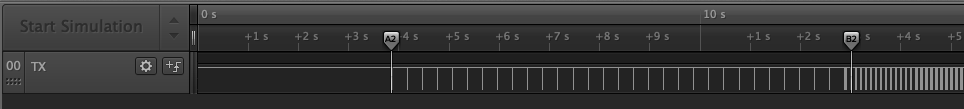We have only one channel and it's named TX, so this could be UART.
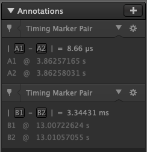We also have two annotations. If we zoom in the first annotation.
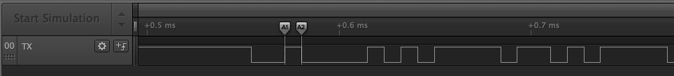Look like the annotation has the measurement for 1 bit. So based on this measure we could get the baud rate(bits per second).
So based on this annotation we can get the following.
1000000 ÷ 8.66 = 115473.441109.
This number is very close to 115200, a known baud rate. So if we use the Async Serial analyzer.
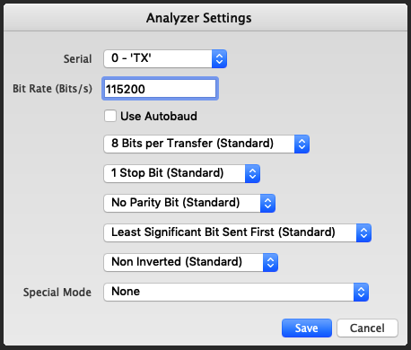We get the following:
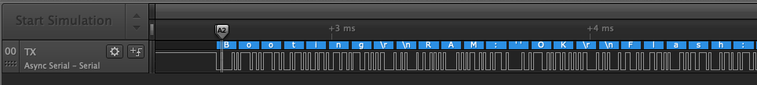But if we go to the second notation, the analyzer is not able to get data.
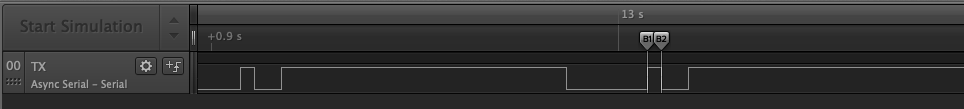In the second anotation the measure is done is miliseconds instead of microseconds.
This number is very close to 300. So if we set baud rate to 300 in the Async Serial analyzer.
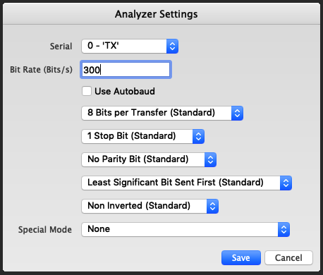We get the following:
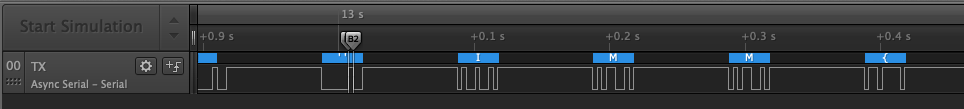 We can get the flag.IMM{c1b82410259463fadbd84ddab4965b69}
You can download the challenge file here. When we open this file we get the following:
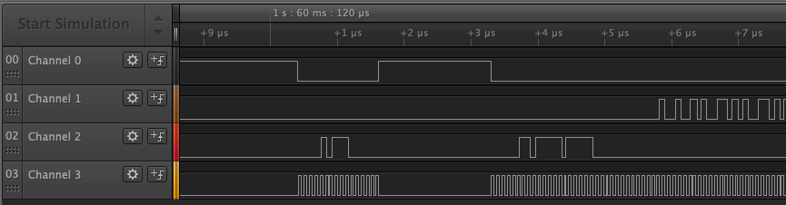We could try different analyzers in this case, based on the data we can assume we have a SLAVE SELECT(aka CHIP SELECT) and a CLOCK channel. So this looks like SPI. But if we use SPI analyzer we don't really get something useful, after a quick search on the web we found a SPI Flash analyzer.
Once the SPI Flash analyzer is build we need to setup the channel configuration.
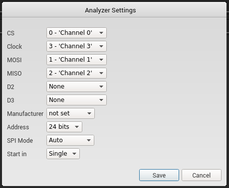And finally we get the flag.
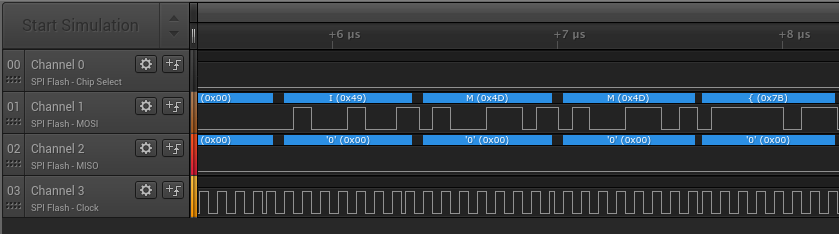IMM{SPY_VS_SPY}